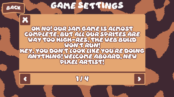
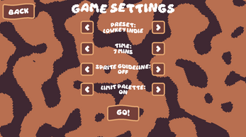
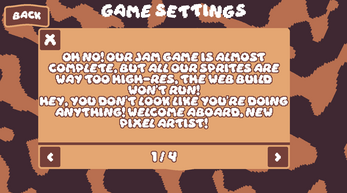
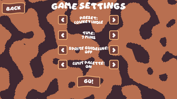
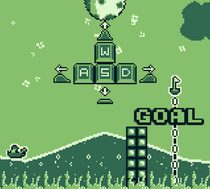
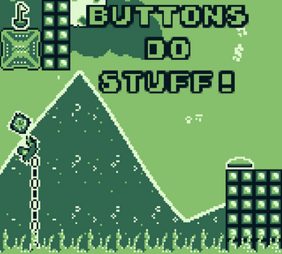
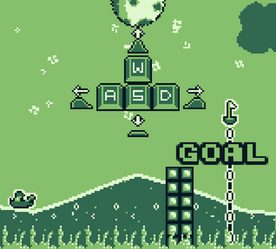
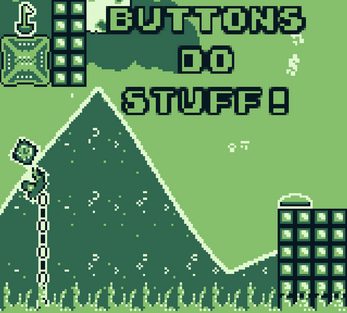
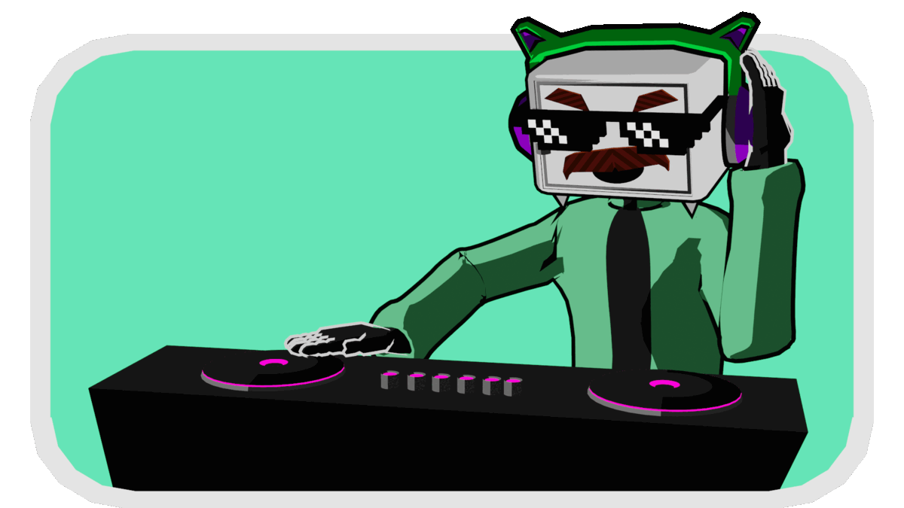
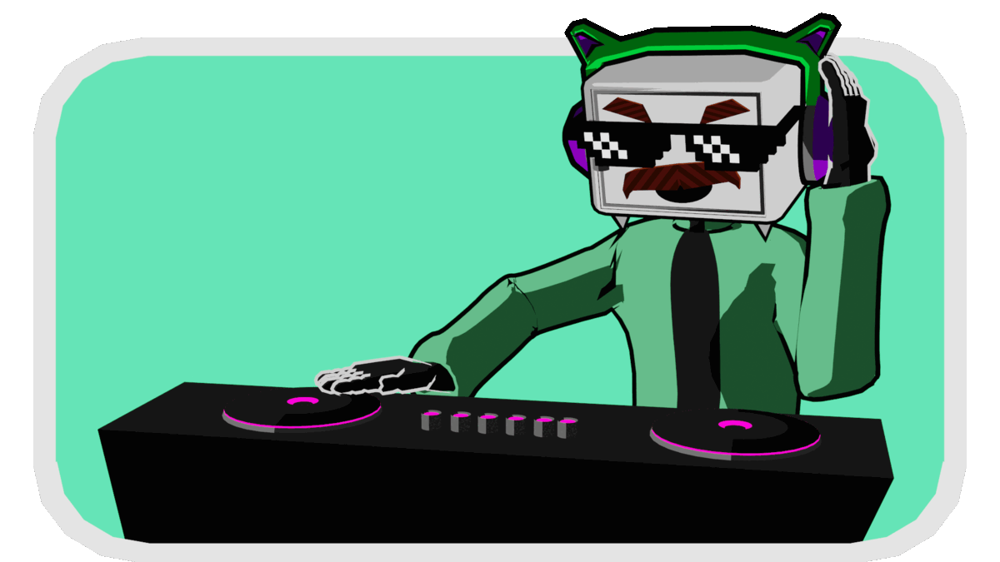

Valiant Voodoo
(4th place in Jame Gam #40)
Valiant Voodoo is a game where you play as a knight,
tasked with defeating an onslaught of undead enemies by re-stitching your magic voodoo doll mid-fight to match the bodies of your foes. I designed and made this game in 5 days, doing all the art and programming myself. This was also my first time doing all my own sound effects, using objects in my dorm room.

 



 



 
